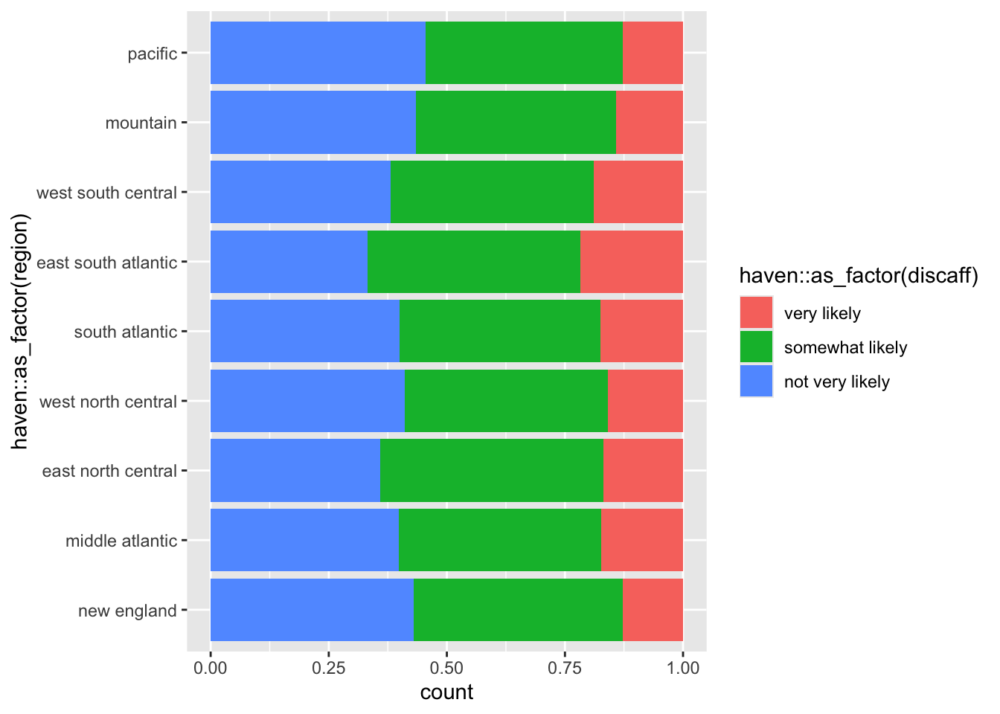
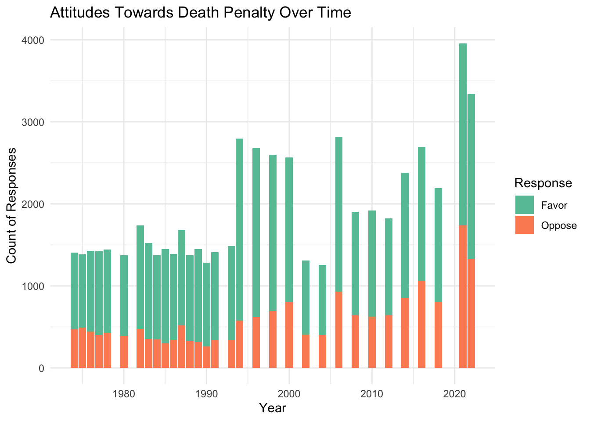

3.1.1 Does the public opinion on abortion vary based on the reason a woman is seeking abortion ?
Code
# Transforming the data into long formatgss_abortion_reason_long_noNA = gss_ab_fct_noNA |>pivot_longer(cols =c(`mother's health`,`rape`,`birth defect`,`financial hardship`,`married-no more children`,`not married`, `any reason`), names_to ="abortion_reason",values_to ="response") |>select(c(year, abortion_reason, response)) |>mutate(abortion_reason =factor(abortion_reason, levels=c("mother's health","rape","birth defect","financial hardship","married-no more children","not married", "any reason")))# Stacked bar chart to show the responses of respondents on whether a woman should be able to legally obtain an abortion based on the reason for seeking abortionggplot(gss_abortion_reason_long_noNA |>filter(!is.na(response)), aes(x=abortion_reason, fill= response))+geom_bar(position="fill") +labs(title ="Public Opinions on Whether a Pregnant Woman Should Be Allowed to Obtain a Legal Abortion \n Categorized by Reason", y ="Percentage of Respondents", x ="Reason for Abortion", fill ="Response") +theme_bw() +theme(plot.title =element_text(hjust=0.5))

We first seek to investigate whether the general public opinion on abortion varies based on the reason a woman seeks abortion. We include data from the entire period of 50 years (1977-2022). Note that the seven variables we choose represent the following reasons:
mother's health: If the woman’s own health is seriously endangered by the pregnancy?
rape: If she became pregnant as a result of rape?
birth defect: If there is a strong chance of serious defect in the baby?
financial hardship: If the family has a very low income and cannot afford any more children?
married-no more children: If she is married and does not want any more children?
not married: If she is not married and does not want to marry the man?
any reason: If the woman wants it for any reason?
These variables are originally labeled abhlth, abrape, abdefect, abpoor, abnomore, absingle, and abany respectively. All these variables were included in the GSS survey from 1972 to 2022, except for the “abany” (abortion for any reason) variable which was only included starting in 1977.
The category receiving the most support for abortion is when the mother’s health is at risk, as 89.3% of respondents are in favor of abortion in this case. Abortion in cases of rape or a potential serious defect in the baby also receives strong supoort at 81.54% and 80.02% respectively. Support for the remaining reasons is much lower. Only 50% of respondents vote in favor of abortion when the reason is financial hardship. Other reasons, such as when the mother is married but does not want more children, is unmarried and does not want to marry the father, or when abortion is sought for any reason, receive even less support. The graph reveals that the percentage of support is nearly identical for these reasons. This is an expected result, as these reasons are often viewed as less “detrimental” compared to situations where the health of the mother or baby is compromised. Seeking abortion for any reason is the category that receives the least amount of support of all the reasons the survey explores with only 45.12% of support.
3.1.2 Does the public opinion on abortion vary across time? How does it vary for each of the reasons for seeking abortion?
Code
gss_abortion_noNA = gss_abortion_reason_long_noNA |>group_by(year, abortion_reason, response) |>summarize(n=n()) |>mutate(prop = n/sum(n))ggplot(gss_abortion_noNA |>filter(response =="yes" ), aes(x=year, y=prop, color = abortion_reason, na.rm=TRUE)) +geom_point(size =0.9,color ="black") +geom_line() +labs (x ="Year", y ="Proportion of Positive Responses", title ="Percentage of Respondents In Favor of Abortion Categorized \n by Reason across Time (1972-2022)", color ="Abortion Reason") +theme_bw() +scale_x_continuous(n.breaks =14) +scale_y_continuous() +theme(plot.title =element_text(hjust=0.5))
Since public opinion on abortion in the United States varies depending on the reason for seeking an abortion, as shown by data collected between 1977 and 2022, a natural follow-up question is whether these opinions have changed over time. To explore this, we examine shifts in public opinion for each reason for seeking abortion. Several interesting trends emerge. First, abortion when the mother’s health is at risk has consistently received overwhelming support since 1972, maintaining around 80% support throughout this period. This is the only category that shows no significant changes in support over time. For all other reasons, however, support has fluctuated: a decline in support occurred between 1985 and 1987, followed by an increase between 1990 and 1995, a decline between 1995 and 2005, a noticeable increase in 2010, and then a steady rise thereafter.
As seen in the previous graph, the trend holds true, with overwhelming support for abortion when the mother’s health is at risk, followed by strong support for abortion in cases of rape and serious birth defects. The remaining reasons receive much lower levels of support, in the following order: financial hardship, the mother is married and does not want more children, the mother is single and does not want to marry the father, and finally, the lowest support is for abortion for any reason.
Additionally, we observe that support for abortion for any reason is consistently lower than support for other reasons until 1995, when it occasionally surpasses support for other categories in certain years.
Notice that some of the trends observed in our data correspond to historical events in the U.S. that might have affected the public opinion on the question of abortion. For example, 1973 marks the year when the Roe v Wade decision was made by the US Supreme Court, legalizing abortion in the United States. As such, earlier support for abortion in the early 70s might have been fueled by this landmark decision. The rise of the religious right in the early 1980s as well as the passing of restrictive laws such as the Abortion Control Act of 1982 might have caused a decline in the public’s support of abortion. The early 1990s marked a surge of violence against clinics and providers as well as the The Planned Parenthood v. Casey decision in 1992, which protected Roe but allowed for state restrictions against abortion. Following 2010, activism relating to reproductive rights increased with movements like “#Me Too” and the passing of more restrictive laws in states such as Texas and North Dakota. Under Trump’s presidency, the anti-abortion movement continued to rise with more states attempting to pass more restrictive laws, however, this movement was faced by a rising push back although eventually the Dobbs case ultimately overturning Roe v Wade in 2022. Source
3.1.3 How does the public opinion on abortion vary for different demographic groups across time? How does it vary for each of the reasons for seeking abortion? Which demographic show the most similarities amongst its groups and which shows the most differences?
In this report, we focus on presenting graphs that highlight the most significant similarities and differences in responses regarding the legality of abortion across demographics. While we explored all the demographic categories outlined in the Data Cleaning section, we found that some groups in particular exhibited notable differences in opinion. However, upon further investigation, we found out that the results for some demographics might be misleading due to the small representation of certain groups in the survey. For example, when examining religious affiliations of respondents, we found that 82.68% of respondents identified as Christian, while only 2.08% were Jewish, 0.19% Muslim, and 0.15% Hindu. Between 1977 and 2022, only 15 Native Americans and 63 Hindus were surveyed. As such, we are unable to make meaningful comparisons within these religious groups as the sample size of certain groups in the survey is very small and therefore analysis of any trends can be misleading. A similar issue arose when analyzing responses based on the highest degree achieved and race. For example, we found that 81.16% of respondents are white, which means that the sample of respondents lacks in racial diversity. Additionally, note that the racial categories considered in the survey were limited to “White,” “Black,” and “Other,” which further constrains the analysis.
With this being said, we found that different groups within the age and sex demographics do show similar trends across time in their support of abortion based on the different abortion reasons. These groups are also equally represented in the survey, which makes the analysis valid. Note that for the age demographic, each 5 year group represents 8-11% of the respondents, therefore the different age groups are equally represented. Then, for the sex demographic, around 44% are male and 55% are female. We present below the graph showing the percentage of each sex group in favor of abortion by abortion reason across time - the groups in this demographic show the most similarity in their trend of abortion support.
Code
prc_dem_sex_noNA = gss_ab_fct_noNA |>pivot_longer(cols =c(`mother's health`,`rape`,`birth defect`,`financial hardship`,`married-no more children`,`not married`, `any reason`), names_to ="abortion_reason",values_to ="response") |>mutate(abortion_reason =factor(abortion_reason, levels=c("mother's health", "rape","birth defect", "financial hardship","married-no more children","not married", "any reason"))) |>group_by(year, abortion_reason, sex, response) |>summarize(n=n()) |>mutate(prop = n/sum(n))ggplot(prc_dem_sex_noNA |>filter(response =="yes", sex !=is.na(sex)), aes(x=year, y=prop, color = abortion_reason)) +geom_point(size =0.9,color ="black") +geom_line() +labs (x ="Year", y ="Proportion of Positive Responses", title ="Change in Percentage of Repondents In Favor of Abortion by Demographic (Sex) Group Across Time (1972-2022)", color ="Abortion Reason") +theme_bw(19) +scale_x_continuous(n.breaks =14) +scale_y_continuous() +facet_wrap(~sex, ncol =1)

Interestingly, the two groups show similar patterns of abortion support over time across different reasons, which is somewhat unexpected, as one might assume that women, given that abortion directly affects them more than men, would show stronger support. However, between 2010 and 2015, men appear to show more support for abortion in cases where the pregnancy results from rape compared to women. Support for abortion when the mother’s health is at risk also seems to be slightly higher among men. Additionally, the “married but does not want more children” category shows slightly more support from men than women between 2005 and 2015.
The demographic category that shows the most divergent trends is the one based on political and social views. The results here are not surprising, as we observe a clear upward trend in abortion support over time among the most liberal respondents, with high support for all abortion reasons. In contrast, conservatives show a downward trend in support over time, with much lower support for abortion except in cases of rape, the mother’s health, or fetal abnormalities. Moderates and those who identify as slightly conservative show relatively little variation in their views on abortion across time. Although each group in this demographic is well represented in the survey, only 3% of respondents identify as extremely liberal and 3% as extremely conservative (approximately 1,220 individuals in each group). We believe this low percentage reflects societal variation, and the sample size is sufficiently robust for analysis.
Code
prc_dem_polviews_noNA = gss_ab_fct_noNA |>pivot_longer(cols =c(`mother's health`,`rape`,`birth defect`,`financial hardship`,`married-no more children`,`not married`, `any reason`), names_to ="abortion_reason",values_to ="response") |>mutate(abortion_reason =factor(abortion_reason, levels=c("mother's health", "rape","birth defect", "financial hardship","married-no more children","not married", "any reason"))) |>group_by(year, abortion_reason, polviews, response) |>summarize(n=n()) |>mutate(prop = n/sum(n))ggplot(prc_dem_polviews_noNA |>filter(response =="yes"), aes(x=year, y=prop, color = abortion_reason)) +geom_point(size =0.9,color ="black") +geom_line() +labs (x ="Year", y ="Proportion of Positive Responses", title ="Change in Percentage of Repondents In Favor of Abortion by Demographic (Social/Political Belief) Group Across Time (1972-2022)", color ="Abortion Reason") +theme_bw(19) +scale_x_continuous(n.breaks =14) +scale_y_continuous() +facet_wrap(~polviews, ncol =2)
In 1994, the General Social Survey began collecting data on public support or opposition for affirmative action - the practice of prioritizing black and other minority applicants for jobs and other positions in order to compensate for existing disparities created by historical discrimination. Specifically, two questions were added: “What do you think the chances are these days that a white person won’t get a job or promotion while an equally or less qualified black person gets one instead” (coded in the dataset as discaff), and “Are you for or against preferential hiring and promotion of blacks?” (coded in the dataset as affrmact). We will primarily focus on the latter of these variables as it more directly approaches peoples’ beliefs about social programs, but both of these are useful to investigate. These variables are coded in opposite directions: discaff is coded such that lower numbers indicate that the respondent believes affirmative action programs are likely to harm white applicants; while affrmact is coded such that lower numbers indicate more support for affirmative action.
3.2.1 Does the public opinion on affirmative action vary consistently by region over time?
Code
library(forcats)year_averages <- gss_d |>filter(!is.na(as.factor(affrmact)), !is.na(as.factor(discaff))) |>mutate(region_recode =fct_recode(haven::as_factor(region), "midwest"="west north central","midwest"="east north central","northeast"="new england","northeast"="middle atlantic","south"="west south central","south"="east south atlantic","south"="south atlantic")) |>group_by(year, region_recode) |>summarize(affrmact_avg =mean(affrmact), discaff_avg =mean(discaff))b <-ggplot(year_averages, aes(x = year, y = affrmact_avg, color = region_recode)) +geom_point(size =0.9, color ="black") +geom_line() +scale_color_discrete(name ="region") +theme_bw(12) +labs(y ="Average Support to Opposition on a 1-4 scale") +scale_color_brewer(palette="Set1", name ="Region") +ggtitle("Regional Opinions on Affirmative Action Over Time")b
We first examine whether there is consistent regional variation for support (lower-number responses on this scale) or opposition (higher-number responses on this scale) over the period of time that affirmative action has been on the GSS. Interestingly, the only pattern that really stands out is that the northeast has been generally more likely to support affirmative action over the time where the question was asked, while other regions have oscillated in their relative positions over time. This is perhaps indicative that political divisions on this issue are less regionally varied than the standard political assumptions that political analysts tend to make.
3.2.2 Do views on affirmative action vary with political views?
Code
year_averages_pol <- gss_d |>filter(!is.na(as.factor(affrmact)), !is.na(as.factor(discaff)), !is.na(as.factor(polviews))) |>group_by(year, polviews) |>summarize(affrmact_avg =mean(affrmact), discaff_avg =mean(discaff))c <-ggplot(year_averages_pol, aes(x = affrmact_avg, y = discaff_avg, color= haven::as_factor(polviews))) +geom_point(size =3) +labs(x ="Average Support to Opposition for Affirmative Action on a 1-4 scale",y ="Average Belief that Affirmative Action Does Not Harm White People on a 1-3 scale") +ggtitle("Correlation between different views on Affirmative Action, by Political Leaning") +scale_color_brewer(palette ="Dark2", name ="Political Views") +theme_bw(12)c
Here, we can see a clear correlation between support for affirmative action and the belief that it does not harm white people when implemented, as one might expect. Each point is a single year’s sample, split between the options for self-described political views provided by the GSS, taking the average of responses to those variables. Interestingly, it is not a particularly tight correlation, with a fairly wide spread in the relationship between the two variables, although there is evident clustering on the political view scale, with people who have similar political views having fairly similar views on affirmative action. However, that clustering has a lot of overlap, and could not be derived without knowing the respondents’ self-identified political views. In fact, we can see overlap of groups as disparate as “moderate” and “extremely conservative”, though we do not see as much overlap between groups on the liberal side of the spectrum.
3.2.3 Variation in opinions across generations
Code
year_averages_by <- gss_d |>filter(!is.na(as.factor(affrmact)), !is.na(as.factor(age))) |>mutate(birthyear = year - age)d <-ggplot(year_averages_by, aes(x=birthyear, fill=haven::as_factor(affrmact))) +geom_bar(position="fill") +theme_bw(12) +scale_fill_brewer(palette ="Set1", name ="Opinion on Affirmative Action") +labs(y ="Proportion of population", x ="Birth Year") +ggtitle("Distribution of Opinions on Affirmative Action by Birth Year")d
In this chart, we calculate the approximate birth year of respondents based on their age at the time of the survey. We can see that as pepole get younger, they are significantly more likely to favor affirmative action, though no group ever reached a majority in favor until very recently - and either tail end should be taken as likely very distorted due to a smaller sample size. The main feature evident here is that over time, the proportion of respondents answering “strongly favors” is mainly what has increased, with the “strongly opposes” decreasing, while the less-extreme views essentially stay consistent in their proportions.
3.2.4 Do opinions on affirmative action vary with employment status?
Code
a <- gss_d |>filter(!is.na(as.factor(affrmact)), !is.na(as.factor(wrkstat))) |>mutate(worknew =fct_recode(haven::as_factor(wrkstat),"employed"="with a job, but not at work because of temporary illness, vacation, strike","employed"="working part time","employed"="working full time","stay-at-home"="keeping house","unemployed"="unemployed, laid off, looking for work")) |>group_by(affrmact, worknew, year) |>summarize(count =n()) |>group_by(worknew, year) |>mutate(prop = count/sum(count)) |>ggplot(aes(x=year, color = haven::as_factor(affrmact), y = prop)) +geom_point(size =0.9, color ='black') +geom_line() +facet_wrap(~worknew, ncol=1) +scale_color_brewer(name ="Opinion on Affirmative Action", palette ="Set1") +labs(x ="Proportion of respondents") +ggtitle("Variation of Viewpoints on Affirmative Action over time, by Employment Status") +theme_bw(12)a
Political scientists often hypothesize that economic circumstances are correlated with beliefs about racial resentment, so we will break the responses over time down by employment status. As with other trends, we do see decreasing opposition to affirmative action for most groups, though the steepest decrease occurs with respondents currently in school. Interestingly, the unemployed also have a fairly large change over time, moreso than the currently-employed, while retired people and people who choose not to be employed in order to stay at home show less distinct changes in their opinions, but still broadly follow the same trends. However, generally, we see that both the unemployed and employed have similar feelings about affirmative action as each other over time
3.3 Capital Punishment
Code
library(gssr)data(gss_all)
3.3.1 Declining support for capital punishment over the past 50 years
The decline in support for capital punishment beginning in the 1990s is likely attributed to multiple factors. Some of these include growing awareness of wrongful convictions highlighted by DNA exoneration, concerns about racial disparities in sentencing, and shifting moral perspectives on state-sanctioned executions. Additionally, declining crime rates in the late 1990s and 2000s may have reduced public demand for harsh punishments. The emergence of life without parole as an alternative sentence and increased focus on the high costs of death penalty cases also likely contributed to this trend. While no single factor can be pinpointed as the sole cause, this combination of legal, social, and economic considerations has likely shaped public opinion over time.
Code
library(tidyverse)library(ggplot2)library(scales)cappun_data <- gss_all |>select(year, cappun) |>filter(cappun ==1| cappun ==2) |>mutate(cappun =factor(cappun, levels =c(1, 2), labels =c("Favor", "Oppose")))cappun_summary <- cappun_data |>group_by(year, cappun) |>summarise(count =n()) |>group_by(year) |>mutate(proportion = count /sum(count))ggplot(cappun_summary, aes(x = year, y = proportion, fill = cappun, color = cappun)) +geom_area(alpha =0.2, position ="identity") +geom_line() +scale_fill_manual(values =c("Favor"="gray10", "Oppose"="gray90")) +scale_color_manual(values =c("Favor"="black", "Oppose"="gray40")) +scale_y_continuous(labels = scales::percent) +theme_bw() +labs(title ="America's Changing View on Capital Punishment",subtitle ="Public Opinion Trends (1974-2018)",x ="Year",y ="Percentage of Respondents",caption ="Source: General Social Survey" ) +theme(plot.title =element_text(face ="bold", size =16),plot.subtitle =element_text(color ="gray50"),legend.position ="bottom",panel.grid.minor =element_blank(),panel.grid.major =element_line(color ="gray90", linetype ="dotted") ) +geom_vline(xintercept =1985, linetype ="dashed",color ="gray40") +annotate("text", x =1985, y =0.60, label ="Peak\n(80% Favor)", color ="gray40", fontface ="italic") +geom_vline(xintercept =2000,linetype ="dashed",color ="gray40") +annotate("text", x =2000, y =0.50, label ="DNA exonerations\ngain attention", color ="gray40") +geom_vline(xintercept =2007, linetype ="dashed",color ="gray40") +annotate("text", x =2007, y =0.20, label ="New Jersey\nabolishes death penalty", color ="gray40") +geom_vline(xintercept =2021, linetype ="dashed",color ="gray40") +annotate("text", x =2019, y =0.50, label ="Low \n(56% Favor)", color ="gray40")
3.3.2 How does support for capital punishment vary by race and religion?
3.3.2.1 Race
The racial disparity in support for capital punishment, with Black people opposing it more than White people, reflects complex historical and societal factors. This difference likely stems from the Black community’s experiences with systemic racism in the criminal justice system, including higher rates of wrongful convictions and disproportionate application of the death penalty. Black Americans may view capital punishment as an extension of historical injustices, from slavery to lynchings, leading to a deeper skepticism of the state’s power over life and death. Conversely, White Americans, generally experiencing more favorable treatment in the justice system, may be more likely to trust its processes and view capital punishment as a legitimate form of justice. This racial divide underscores how personal and communal experiences with law enforcement and the broader criminal justice system can profoundly shape perspectives on punitive measures like the death penalty.
Religious views on capital punishment often reflect beliefs about the afterlife and moral justice. Protestant and Catholic traditions, showing higher support, may emphasize divine judgment and the concept of earthly consequences for actions. Eastern religions like Buddhism and Hinduism, with lower support, tend to view life as cyclical and interconnected, focusing on karma and reincarnation rather than final judgment. This perspective may lead to a greater emphasis on rehabilitation and the sanctity of all life. The varying levels of support across religions highlight how different conceptions of the soul, divine justice, and the nature of existence can significantly influence attitudes towards punitive measures in this life.